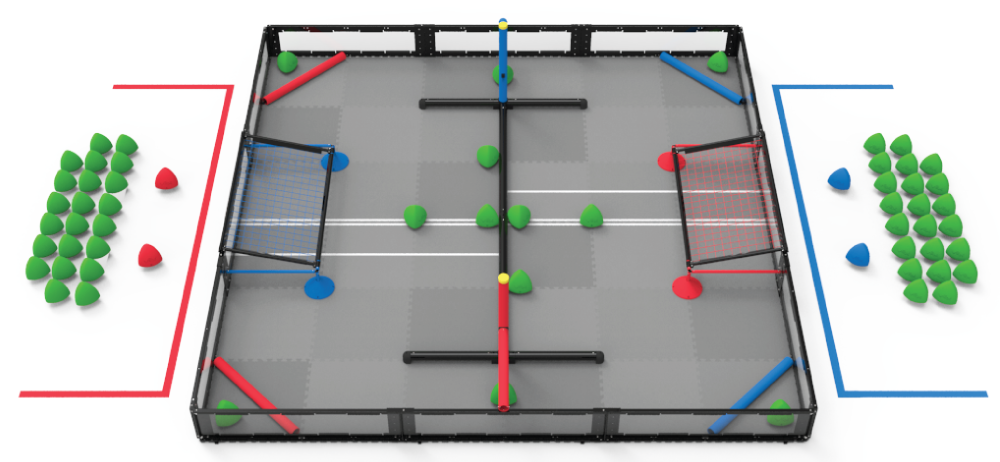
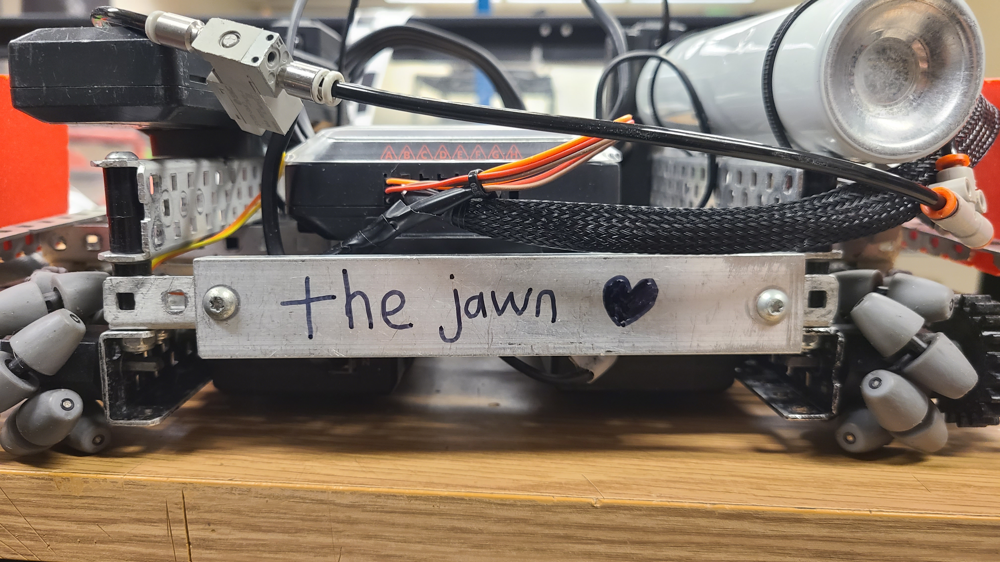

The VEX Robotics Competition is a competition for middle schoolers through university students which has its challenge change each year. During the 2023-24 season, the challenge was dubbed
"Over Under" and featured 60 green reuleaux triangles named "Triballs", two elevation bars which robots could climb on top of, and two goals to deposit Triballs into. Teams could score
5 points for placing a Triball in their respective goal, 2 points for having a Triball on their half of the field, and up to 20 points for each robot elevated on an elevation bar depending on altitude.
At the university level, each team is responsible for making two robots: one that fits within a 15"x15"x15" size constraint, and another fitting in a 24"x24"x24" size constraint.

Late into the 2023-24 VEX Robotics Competition season, Purdue SIGBots' competition team, known by their identifier "BLRS" intended to test the effectiveness of creating a robot with
a height at or below 6 inches. The benefit of such a robot would be the ability to descore Triballs from the opponent's goal, since robots above 6 inches tall cannot perform
such a feat. BLRS believed that this capability would cause opponents to play more conservatively to prevent "double-zoning". Double-zoning describes an event where two robots on the same team
are in the same half of the field; in this case, the rules state that their goal is no longer protected and can have any scored Triballs tampered with.
While BLRS intended to converge on creating a highly-refined robot design that would compete in the World Championship, I was made the principal designer of this new 15"x15"x15" robot in order
to investigate the effectiveness of "descoring robots". I started by using decision matrices to evaluate which chassis and Triball intake designs would be optimal for this robot. Through rigorous testing,
I determined that a holonomic chassis, specifically one using Mecanum wheels, as well as an intake made of pneumatic tubing would be optimal for this robot.

The robot was primarily constructed using aluminum C-channels. It would eventually have pneumatic cylinder powered "wings" added to it, which increased its surface area and allowed it to plow
Triballs into the goal more easily. The wings were constructed out of small aluminum L-channels and were attached to the pneumatic cylinders using a clever screw pivot joint. To help
the robot drive over the barrer in the middle of the field, thick "sleds" were designed and manufactured out of PLA filament to allow the robot to remain tangent to the PVC pipe barrier
and gain enough traction to effectively jump over the barrier. The robot would later be affectionately referred to as "The Jawn",
a Philadelphian slang term meaning "thing" and a playful reference to the club president's Pennsylvanian roots.